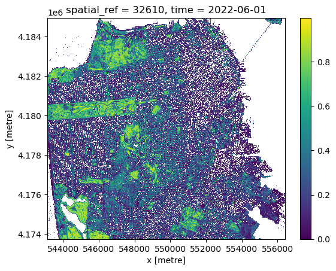
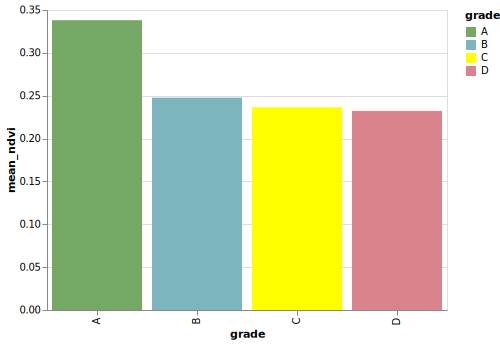

from pystac_client import Client
import odc.stac
import pystac_client
import rioxarray
import os
# suppress warning messages
import warnings
warnings.filterwarnings('ignore')Exploring the Legacy of Redlining
This executable notebook provides an opening example to illustrate a cloud-native workflow. Pedagogy research emphasizes the importance of “playing the whole game” before breaking down every pitch and hit. We intentionally focus on powerful high-level tools (STAC API, COGs, datacubes) to illustrate how a few chunks of code can perform a task that would be far slower and more verbose in a traditional file-based, download-first workflow. Note the close parallels between R and Python syntax. This arises because both languages wrap the same underlying tools (the STAC API and GDAL warper) and handle many of the nuisances of spatial data – from re-projections and resampling to mosaic tiles – without us noticing.
Data discovery
The first step in many workflows involves discovering individual spatial data files covering the space, time, and variables of interest. Here we use a STAC Catalog API to recover a list of candidate data. We dig deeper into how this works and what it returns in later recipes. This example searches for images in a lon-lat bounding box from a collection of Cloud-Optimized-GeoTIFF (COG) images taken by Sentinel2 satellite mission. This function will not download any imagery, it merely gives us a list of metadata about available images, including the access URLs.
box = [-122.51, 37.71, -122.36, 37.81]
items = (
Client.
open("https://earth-search.aws.element84.com/v1").
search(
collections = ['sentinel-2-l2a'],
bbox = box,
datetime = "2022-06-01/2022-08-01",
query={"eo:cloud_cover": {"lt": 20}}).
item_collection()
)We pass this list of images to a high-level utilty (gdalcubes in R, odc.stac in python) that will do all of the heavy lifting. Using the URLs and metadata provided by STAC, these functions can extract only our data of interest (given by the bounding box) without downloading unnecessary regions or bands. While streaming the data, these functions will also reproject it into the desired coordinate reference system – (an often costly operation to perform in R) and can potentially resample or aggregate the data to a desired spatial resolution. (The R code will also resample from images in overlapping areas to replace pixels masked by clouds)
data = odc.stac.load(
items,
crs="EPSG:32610",
bands=["nir08", "red"],
bbox=box
)
# For some reason, requesting reprojection in EPSG:4326 gives only empty valuesWe can do arbitrary calculations on this data as well. Here we calculate NDVI, a widely used measure of greenness that can be used to determine vegetation cover. (Note that the R example uses lazy evaluation, and can thus perform these calculations while streaming)
ndvi = (((data.nir08 - data.red) / (data.red + data.nir08)).
resample(time="MS").
median("time", keep_attrs=True).
compute()
)
# mask out bad pixels
ndvi = ndvi.where(ndvi <= 1)ndvi<xarray.DataArray (time: 1, y: 1118, x: 1329)> Size: 12MB
array([[[nan, nan, nan, ..., nan, nan, nan],
[nan, nan, nan, ..., nan, nan, nan],
[nan, nan, nan, ..., nan, nan, nan],
...,
[nan, nan, nan, ..., nan, nan, nan],
[nan, nan, nan, ..., nan, nan, nan],
[nan, nan, nan, ..., nan, nan, nan]]])
Coordinates:
* y (y) float64 9kB 4.185e+06 4.185e+06 ... 4.174e+06 4.174e+06
* x (x) float64 11kB 5.431e+05 5.431e+05 ... 5.564e+05 5.564e+05
spatial_ref int32 4B 32610
* time (time) datetime64[ns] 8B 2022-06-01And we peek at the result 1. The long rectangle of Golden Gate Park is clearly visible in the North-West:
ndvi.plot()<matplotlib.collections.QuadMesh at 0x734475973650>
We reproject this data into web mercator projection (longitude/latitude coordinates, EPSG:4326) and serialize as a Cloud Optimized Geotiff (COG) file using rioxarray, which will make this data useful to us in the future. While we could simply write the file to a path on the local disk (e.g. dest = "sf-ndvi.tif"), the code below exploits the virtual filesystem interface (VSI) to write the file directly to a cloud object store (which requires access to necessary environmental variables).
# assumes configuration
bucket = "public-data"
path = "espm-157/sf_ndvi.tif"
dest = f"/vsis3/{bucket}/{path}"
( ndvi.
rio.reproject("EPSG:4326").
rio.to_raster(dest, driver="COG")
)Because we have written to a publicly readable bucket, our COG is now accessible without authentication using a normal https address. This will be convenient later in constructing interactive maps.
endpoint = os.environ["AWS_S3_ENDPOINT"]
public_url = f"https://{endpoint}/{bucket}/{path}"From NDVI to Environmental Justice
We examine the present-day impact of historic “red-lining” of US cities during the Great Depression using data from the Mapping Inequality project. All though this racist practice was banned by federal law under the Fair Housing Act of 1968, the systemic scars of that practice are still so deeply etched on our landscape that the remain visible from space – “red-lined” areas (graded “D” under the racist HOLC scheme) show systematically lower greenness than predominately-white neighborhoods (Grade “A”). Trees provide many benefits, from mitigating urban heat to biodiversity, real-estate value, to health.
Spatial Vector Formats
While our satellite imagery data uses raster file formats such as COG, cartographic features such as polygons, lines or points are represented in vector formats. duckdb provides a scalable way to read and manipulate very large datasets from databases, tabular files (like csv or parquet) and geospatial vector objects (e.g. shapefiles, gpkg, geojson, geoparquet).
import ibis
from ibis import _
con = ibis.duckdb.connect()
city = (
con
.read_geo("/vsicurl/https://dsl.richmond.edu/panorama/redlining/static/mappinginequality.gpkg")
.filter(_.city == "San Francisco", _.residential)
.execute()
.set_crs("EPSG:4326")
)Interactive maps
We can use leafmap to visualize both raster and vector layers:
import leafmap.maplibregl as leafmap
m = leafmap.Map( style="liberty")
m.add_cog_layer(public_url, name = "NDVI", opacity = 0.7, palette="greens")
m.add_gdf(city, "fill", paint = {"fill-color": ["get", "fill"], "fill-opacity": 0.5})
m.add_layer_control()# use an iframe only to display the map can display on webpages
from IPython.display import IFrame
m.to_html("../../static/ndvi-redlines.html", overwrite=True)
IFrame(src='https://boettiger-lab.github.io/nasa-topst-env-justice/static/ndvi-redlines.html', width="100%", height="600")m # otherwise, standard print displays map only in interactive notebooksZonal statistics
In addition to large scale raster data such as satellite imagery, the analysis of vector shapes such as polygons showing administrative regions is a central component of spatial analysis, and particularly important to spatial social sciences. The red-lined areas of the 1930s are one example of spatial vectors. One common operation is to summarise the values of all pixels falling within a given polygon, e.g. computing the average greenness (NDVI)
from exactextract import exact_extract
exact_extract(dest,
city,
["mean"],
include_geom = True,
include_cols = ["label", "grade", "city", "fill"],
output_options = {"filename": "out.parquet"},
output="gdal") # alternatively use "pandas" for (geo)pandas outputAre historically redlined areas still less green?
mean_ndvi = (con
.read_parquet("out.parquet")
.rename(ndvi="mean")
.group_by(_.grade)
.agg(mean_ndvi = _.ndvi.mean())
.order_by(_.mean_ndvi.desc())
.execute()
)
mean_ndvi| grade | mean_ndvi | |
|---|---|---|
| 0 | A | 0.338100 |
| 1 | B | 0.247741 |
| 2 | C | 0.236526 |
| 3 | D | 0.232238 |
import altair as alt
# grab the color scales from the data, for fun
color_map = con.read_parquet("out.parquet").select("grade", "fill").distinct().order_by(_.grade).execute()
colors = alt.Scale(domain = color_map["grade"], range = color_map["fill"])
# Create an Altair chart
chart = alt.Chart(mean_ndvi).mark_bar().encode(
x='grade',
y='mean_ndvi:Q',
color=alt.Color('grade', scale=colors)
).properties(width=400)
# display as SVG for compatibility with github ipynb rendering
from IPython.display import SVG
chart.save('temp.svg')
SVG('temp.svg')
Footnotes
We will introduce a richer set of tools in a moment.↩︎